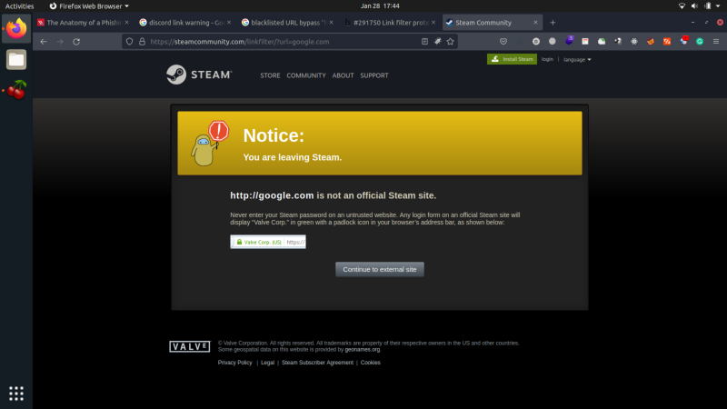
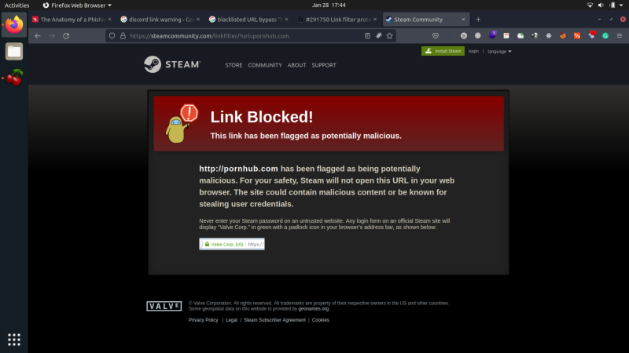
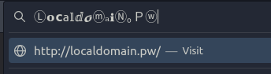

Blacklisting and Whitelisting
How web developers protect their users is by adding a popup or a warning informing the user on what URL he'll be redirected.

This is how Steam implements link handling to prevent phishing attacks. We can see that there is a warning when URLs are clicked. But different things happen on different URLs.
The image above shows what will happen on normal URLs like google.com, but for blacklisted URLs like what is shown in the figure below, the link is blocked.

But what will happen if we try to click a link in steamcommunity.com which points to its own website? Such as this
https://steamcommunity.com/linkfilter/?url=steamcommunity.comUpon opening the link above, we can see here that there is no “Notice” or “Linked Blocked” display because steamcommunity.com trusts this domain so it “whitelists” it, hence no popup is displayed for the user.
In simple terms, Steam categorizes links as “blacklisted”, “whitelisted”, and “normal”. The blacklisted links are links that Steam categorizes as malicious such as porn sites. The whitelisted links are links that belong to their organization, there is no popup shown for whitelisted links because Steams fully trusts whitelisted links. All the other URLs that are neither whitelisted nor blacklisted falls under the “normal” category, which means that only a “notice” will be shown to the user.
Here's a rough summary on how blacklisting and whitelisting works in Steam:
1. The route /linkfilter/ gets the “url” parameter. For example
https://steamcommunity.com/linkfilter/?url=https://www.google.com/search?q=dogs2. The domain stated in the url parameter (which is www.google.com) is compared to a set of whitelisted and blacklisted URLs from the Steam's database.
3. If the the domain is blacklisted, Steam will display the “Link Blocked” modal.
4. If the domain is included in the whitelist, no modal will be displayed and the user will be automatically redirected to the url.
5. If the domain is not in the whitelist and in blacklist, this means that the URL is normal so the “Notice” modal will only be displayed.
This is how basic whitelisting and blacklisting happens. A more complex whitelisting and blacklisting occurs because there are “bypasses”. An example of this is:

Can you see how the URL is treated above? This can bypass the basic whitelisting and blaclisting. An in-depth discussion about the advance concepts of blacklisting and whitelisting will be discussed in the next section.